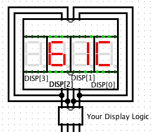

Now that you are done with implementing an ALU, let's implement a simple 8-bit single cycle CPU. This means, we will have 8-bit instructions and 8-bit byte addressing. As with HW6, you will be using Logisim to complete this project.
Copy the contents of ~cs61c/proj/03 to your home directory.
$ mkdir ~/proj $ cp -r ~cs61c/proj/03 ~/proj3This will copy in cpu.circ, the Logisim circuit file where you will be implementing your processor, and converter.circ, a file that will help you implement a particular instruction in this project.
In cpu.circ, you will be implementing a simple 8-bit processor with four 8-bit data registers. This processor will also have separate instruction and data memories.
Similar to the MIPS ISA presented in lecture, there will be three different instruction types: R, I, and J-type. The R-type instruction format seen in lecture has 3 fields to specify the source, target, and destination registers. Unfortunately, with 8 bits we don't have enough bits to specify all the information if we want to maximize functionality. As a result, we will permanently designate two registers to have special functionality -- one always acting as a source ($rs), and the other always acting as the destination ($rd). The remaining two registers ($r0 and $r1) will behave as normal data registers that you have been accustomed to. Naturally, there will be special instructions to move information between the data registers ($r0 and $r1) and the special registers ($rs and $rd). Note: In total, there are 4 registers!
The primary instruction encoding is given below. You can determine which instruction a byte encodes by looking at the opcode (bits 5-7). Please note that $rx registers below refer only to registers $r0 and $r1.
| $rx value | Register name | |
|---|---|---|
| 0 | $r0 | |
| 1 | $r1 | |
| 7 | 6 | 5 | 4 | 3 | 2 | 1 | 0 | Name | Meaning (RTL) | Notes |
|---|---|---|---|---|---|---|---|---|---|---|
| 0 | rx | funct | see R-type Instructions Section | |||||||
| 1 | rx | immediate | disp | DISP[imm] = R[$rx] | see Display Instruction | |||||
| 2 | rx | immediate | lui | R[$rd] = imm << 4 | ||||||
| 3 | rx | immediate | ori | R[$rd] = R[$rx] | imm | ||||||
| 4 | rx | immediate | lw | R[$rd] = MEM[R[$rx] + imm] | ||||||
| 5 | rx | immediate | sw | MEM[R[$rx]+imm] = R[$rs] | ||||||
| 6 | address | jump | PC = (PC & 0xE0) | address | see J-type instruction section | ||||||
| 7 | offset | beq | if R[$r0]==R[$r1], PC = PC+1+offset | see J-type instruction section | ||||||
The following table lists the various R-type instructions there are based on the funct field.
| Funct | Name | Meaning (RTL) | Notes |
|---|---|---|---|
| 0 | add | R[$rd] = R[$rs] + R[$rx] | |
| 1 | sub | R[$rd] = R[$rs] - R[$rx] | |
| 2 | or | R[$rd] = R[$rs] | R[$rx] | bitwise OR |
| 3 | and | R[$rd] = R[$rs] & R[$rx] | bitwise AND |
| 4 | sll | R[$rd] = R[$rs] << R[$rx] | shift left logical, zero extend from the right |
| 5 | slt | R[$rd] = R[$rs] < R[$rx] | set $rd to 1 if $rs < $rx, else 0; treat values as signed |
| 6 | srl | R[$rd] = R[$rs] >>> R[$rx] | shift right logical, zero extend from the left |
| 7 | sra | R[$rd] = R[$rs] >> R[$rx] | shift right arithmetic, sign extend from the left |
| 8 | mxd | R[$rx] = R[$rd] | move value into register $rx from $rd |
| 9 | msx | R[$rs] = R[$rx] | move value into register $rs from $rx |
| 10 | msd | R[$rs] = R[$rd] | move value into $rs from $rd |
| 11 | not | R[$rd] = ~R[$rx] | bitwise NOT |
| 12 | neg | R[$rd] = -1*R[$rx] | negate |
| 13 | jr | PC = R[$rx] | jump register |
| 14-15 | "reserved for future use" | You can implement anything you want with these. |
You've already built an ALU that should support the first 8 R-type instructions. Let us now add 6 more instructions. Note that you actually don't have to modify your ALU in order to implement these new instructions. Try to think of clever ways to use the ALU in order to get the wanted functionality.
All immediate fields are treated as unsigned numbers and are zero-extended accordingly.
see the behavior of I-type instructions in the table above (opcode 1-5).The jump instruction's argument is a pseudoabsolute address, just as in MIPS. address is an unsigned number representing the lower five bits of the next instruction to be executed. The upper three bits are taken from the current PC.
PC = (PC & 0xe0) | address
The beq instruction's argument is a signed offset relative to the next instruction to be executed normally, also as in MIPS. beq can be represented as the following:
if $r0 == $r1
PC = PC + 1 + offset
else
PC = PC + 1
Note: offset is two's-complement!
I am now done, I think... but how do I know it works? Write
programs using the instructions you have to test the correctness of your
CPU's functionality. For now, here is a simple program halt.hex that does nothing,
it halts (infinite loop) by jumping to itself.
You are required to write two programs:
It is strongly recommended that you download and run Logisim on your local machine while developing your CPU. As you've probably discovered in lab, Logisim can quickly overwhelm the instructional machines. Though Logisim is generally stable compared to earlier semesters, it is still recommended that you save and backup your .circ files early and often. The official version of Logisim we will be using for evaluation is v2.1.5.
Logisim RAM modules can be found in the built-in memory library. To add the library to your project, select "Project/Load Library/Built-in Library..." and select the Memory module.
The best way to learn how these work is simply to play with them. In any case, here's a little bit of info to help you get started. The Logisim help page on RAM modules can be found here, but is not terribly helpful. "A" chooses which address will be accessed (if any). "sel" essentially determines whether or not the RAM module is active (if "sel" is low, "D" is undefined). The clock input provides synchronization for memory writes. "out" determines whether or not memory is being read or written. If "out" is high, then "D" will be driven with the contents of memory at address "A". "clr" will instantly set all contents of memory to 0 if high. "D" acts as both data in and data out for this module. This means that you must use a controlled buffer on the input of "D" to prevent conflicts between data being driven in and the contents of memory. The "poke" tool can be used to modify the contents of the module.
You will be using a Logisim ROM module for your instruction memory. It is a much simplified version of a RAM module Both RAM and ROM modules can also be loaded from files using "right-click/Load Image..."
Note: ROM's are READ only, while with RAM's you can either read or write (but you can't do both at the same time).If you check the tattoo on your left arm, you'll be reminded that every computer has five parts: control, datapath, memory, input, and output devices. Accordingly, your project must include an array of four seven-segment displays for output. It should look something like the array shown below:
The disp instruction assigns a register's value to the immth seven-segment display. This value should be held until the next time a disp instruction replaces that display index. You may ignore or wrap immediates beyond the range of the display you've implemented. We've provided a converter library to make seven-segment displays easier to deal with. It can be downloaded here and included via the "Load Library/Logisim Library" menu option. See the examples section to get a better idea of how to incorporate these into your project. Any single digit hexadecimal value 0-f will be displayed as you'd expect. 0xff is displayed as a blank display (no segments highlighted). All other inputs will result in a '?' being displayed.
It is possible to test for equality using already required ALU components (without adding a subtractor or comparator). Think about truth tables and boolean algebra.
You might want to make some sort of specialized register file for keeping track of current display values. The desired functionality is about halfway between a register file and a RAM module.
An in-depth discussion to come soon
Logisim offers some functionality for automating circuit implementation given a truth table, or vice versa. Though not disallowed (enforcing such a requirement is impractical), use of this feature is discouraged. Remember that you will not be allowed a laptop running Logisim on the final.
% submit proj3